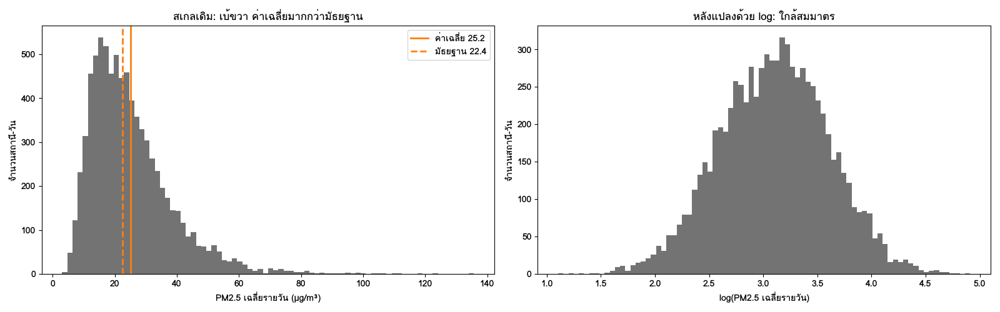

13 สถิติเชิงพรรณนาและการอนุมานเชิงสำรวจ
บทที่ 11 และ 12 ให้ เบาะแส จากภาพ เช่น “สถานีภาคเหนือดูสูงกว่าสถานีในกรุงเทพมหานครในฤดูแล้ง” บทนี้ถามต่ออีกสองข้อ ความต่างนั้น ใหญ่แค่ไหน และ เชื่อได้แค่ไหน John Tukey เปรียบการสำรวจข้อมูลว่าเป็นงานนักสืบ และการวิเคราะห์เชิงยืนยันว่าเป็นงานศาล (Tukey 1977) นักสืบต้องเก็บร่องรอยให้ครบและไม่ด่วนสรุป ศาลต้องชั่งน้ำหนักหลักฐานตามกติกาที่ตั้งไว้ก่อนการพิจารณา บทนี้อยู่ตรงรอยต่อของสองงานนั้น
เนื้อหาเริ่มจากการบรรยายรูปร่างของข้อมูล ซึ่งสำหรับ PM2.5 มีลักษณะเฉพาะคือเบ้ขวา มีค่าเป็นบวกเสมอ และมีฤดูกาลชัด ต่อด้วยสถิติแบบทนทานและการแปลงข้อมูลที่เหมาะกับลักษณะนี้ จากนั้นจึงเข้าสู่การอนุมาน ได้แก่ ช่วงความเชื่อมั่น การทดสอบสมมติฐาน ขนาดอิทธิพล การทดสอบหลายครั้ง และกับดักของสหสัมพันธ์ ตลอดทั้งบทจะย้ำประเด็นเดียวกันซ้ำ ๆ คือ ข้อมูลอนุกรมเวลาจากเครือข่ายสถานีไม่ใช่ตัวอย่างสุ่มที่เป็นอิสระต่อกัน เครื่องมือสถิติทุกตัวจึงต้องใช้อย่างรู้ข้อจำกัด
วัตถุประสงค์การเรียนรู้
เมื่อจบบทนี้ ผู้อ่านสามารถ
- อธิบายรูปร่างการแจกแจงของ PM2.5 ด้วยภาพและตัวเลข และเลือกสถิติแบบทนทานที่เหมาะกับข้อมูลเบ้
- ใช้การแปลง log และ Box-Cox อย่างมีเหตุผล และแปลผลกลับเป็นหน่วยเดิมหรืออัตราส่วนได้ถูกต้อง
- คำนวณและตีความช่วงความเชื่อมั่น โดยคำนึงถึงผลของ autocorrelation ต่อขนาดตัวอย่างที่มีผล
- เลือกการทดสอบแบบ parametric หรือ non-parametric ตามคำถาม หน่วยการวิเคราะห์ และลักษณะของข้อมูล
- รายงานขนาดอิทธิพลคู่กับ p-value และเขียนข้อสรุปที่ตรงกับความหนักแน่นของหลักฐาน
- ใช้ bootstrap และ permutation test เมื่อสูตรสำเร็จรูปไม่เหมาะ
- ปรับผลการเปรียบเทียบหลายครั้ง และระบุ Simpson’s paradox กับ ecological fallacy ในข้อมูลจริงได้
13.1 การแจกแจงและรูปร่างของข้อมูล
การแจกแจงเชิงประจักษ์
เมื่อพูดว่า “การแจกแจงของ PM2.5” เราหมายถึงคำตอบของคำถามว่า ค่าแต่ละระดับเกิดบ่อยแค่ไหน ข้อมูลที่มีอยู่ในมือให้ การแจกแจงเชิงประจักษ์ (empirical distribution) ซึ่งดูได้สามแบบหลัก
| เครื่องมือ | แสดงอะไร | จุดแข็ง | จุดอ่อน |
|---|---|---|---|
| histogram | จำนวนค่าในแต่ละช่วง | อ่านง่าย คนทั่วไปคุ้น | รูปร่างขึ้นกับความกว้างของช่วง |
| KDE (kernel density) | ความหนาแน่นแบบเรียบ | เทียบหลายกลุ่มซ้อนกันได้ | bandwidth เปลี่ยนรูปร่าง และอาจลากเส้นไปต่ำกว่า 0 |
| ECDF | สัดส่วนของค่าที่ไม่เกินแต่ละระดับ | ไม่ต้องเลือกพารามิเตอร์ อ่านเปอร์เซ็นไทล์ได้ตรง | คนทั่วไปไม่คุ้น |
ECDF (empirical cumulative distribution function) มีประโยชน์เป็นพิเศษกับคำถามเรื่องมาตรฐาน เพราะค่าบนแกน y ที่ตำแหน่ง x = 37.5 คือสัดส่วนของวันที่ ไม่เกิน มาตรฐานโดยตรง หนึ่งลบค่านั้นคือสัดส่วนวันที่เกินมาตรฐาน
import duckdb
import numpy as np
import pandas as pd
import seaborn as sns
import matplotlib.pyplot as plt
con = duckdb.connect("data/pm25.duckdb", read_only=True)
daily = con.execute("""
SELECT d.station_id, s.region, d.date, d.pm25_mean
FROM daily_pm25_clean AS d JOIN stations AS s USING (station_id)
WHERE d.is_complete AND d.date < DATE '2024-01-01' -- ช่วงสำรวจ (บทที่ 4)
""").df()
fig, axes = plt.subplots(1, 2, figsize=(11, 4))
sns.histplot(daily, x="pm25_mean", bins=60, ax=axes[0])
sns.ecdfplot(daily, x="pm25_mean", hue="region", ax=axes[1])
for ax in axes:
ax.axvline(37.5, color="black", linestyle="--", linewidth=1)ลักษณะเฉพาะของ PM2.5
ข้อมูลความเข้มข้นของมลพิษอากาศมีลักษณะที่พบซ้ำในงานวิจัยจำนวนมาก และควรตรวจกับข้อมูลของตนทุกครั้ง
- มีค่าเป็นบวกและมีขอบล่างที่ศูนย์ ค่าติดลบหรือศูนย์มักเป็นค่าแทนหรือความผิดพลาดของเครื่อง (บทที่ 9)
- เบ้ขวา ค่าส่วนใหญ่อยู่ในช่วงต่ำถึงปานกลาง และมีหางยาวไปทางค่าสูง
- ใกล้การแจกแจงแบบ lognormal Ott (Ott 1990) อธิบายว่าความเข้มข้นเกิดจากการเจือจางหลายขั้นที่ คูณ กัน เช่น อัตราการปล่อย คูณการผสมของอากาศ คูณการพัดพา ผลคูณของปัจจัยสุ่มหลายตัวมีแนวโน้มเป็น lognormal ตามทฤษฎีบทขีดจำกัดกลางที่ใช้กับลอการิทึม
- เป็นส่วนผสมของหลายฤดู การแจกแจงทั้งปีคือการรวมการแจกแจงของฤดูฝน (ค่าต่ำ แคบ) กับฤดูแล้ง (ค่าสูง กว้าง) จึงอาจมีสองยอด (bimodal) หรือมีไหล่ที่ผิดรูป
ข้อ 4 มีผลต่อการวิเคราะห์ทุกขั้นตอน สถิติสรุปของทั้งปีเป็นการเฉลี่ยข้ามกระบวนการที่ต่างกัน การ แบ่งชั้นตามฤดู ก่อนสรุปจึงมักให้ภาพที่ตรงกว่า
ภาพที่ 13.1 แสดงลักษณะข้อ 2 และ 3 กับข้อมูลสังเคราะห์ ในสเกลเดิมค่าเฉลี่ยถูกหางดึงไปทางขวาของมัธยฐาน หลังแปลงด้วย log รูปร่างใกล้สมมาตร

บรรยายรูปร่างด้วยตัวเลข
รูปร่างของการแจกแจงบรรยายได้ด้วยสี่ด้าน ได้แก่ ตำแหน่ง (location) การกระจาย (spread) ความเบ้ (skewness) และความหนาของหาง (kurtosis) ความเบ้ที่ใช้บ่อยคือสัมประสิทธิ์ความเบ้ของตัวอย่าง
\[ g_1 = \frac{\frac{1}{n}\sum_{i=1}^{n}(x_i - \bar{x})^3}{\left(\frac{1}{n}\sum_{i=1}^{n}(x_i - \bar{x})^2\right)^{3/2}} \tag{13.1}\]
โดย \(x_i\) คือค่าที่ \(i\) ในตัวอย่าง \(\bar{x}\) คือค่าเฉลี่ย และ \(n\) คือจำนวนค่า ตัวเศษยกกำลังสามจึงคงเครื่องหมายไว้ ค่าที่อยู่ไกลทางขวามีส่วนทำให้ \(g_1\) เป็นบวกมาก ตัวส่วนทำให้ค่าไม่มีหน่วย ค่า \(g_1\) ใกล้ 0 แปลว่าเกือบสมมาตร และค่ามากกว่า 1 ถือว่าเบ้มากตามเกณฑ์คร่าว ๆ ที่ใช้ทั่วไป
ตัวอย่าง (ข้อมูลสมมุติ) ค่าเฉลี่ยรายวันเจ็ดวันของสถานีหนึ่งคือ 18, 22, 25, 31, 40, 52 และ 120 µg/m³ ค่าเฉลี่ยคือ 44.0 µg/m³ และ \(g_1 \approx 1.62\) ค่าบวกมากเกิดจากวันที่มีค่า 120 เพียงวันเดียว ข้อมูลชุดนี้จะใช้ต่อในหัวข้อถัดไป
scipy.stats.skew(x) คำนวณ \(g_1\) ตามสมการนี้เป็นค่าเริ่มต้น ส่วน pandas.Series.skew() ใช้สูตรที่ปรับความเอนเอียงสำหรับตัวอย่างเล็ก ค่าสองค่านี้จึงต่างกันเล็กน้อยเมื่อ \(n\) น้อย ให้ระบุว่าใช้สูตรใดเมื่อรายงาน
เทียบกับการแจกแจงทางทฤษฎีด้วย Q–Q plot
Q–Q plot วางควอนไทล์ของข้อมูลเทียบกับควอนไทล์ของการแจกแจงทางทฤษฎี ถ้าจุดเรียงบนเส้นตรง แปลว่าข้อมูลมีรูปร่างตามการแจกแจงนั้น การวาด Q–Q plot ของ log(pm25_mean) เทียบกับการแจกแจงปกติคือการตรวจว่าข้อมูลใกล้ lognormal หรือไม่
from scipy import stats
x = daily.loc[daily["pm25_mean"] > 0, "pm25_mean"]
fig, axes = plt.subplots(1, 2, figsize=(10, 4))
stats.probplot(x, dist="norm", plot=axes[0])
stats.probplot(np.log(x), dist="norm", plot=axes[1])
axes[0].set_title("ค่าเดิม เทียบการแจกแจงปกติ")
axes[1].set_title("log เทียบการแจกแจงปกติ")ภาพซ้ายของข้อมูลเบ้ขวามักโค้งขึ้นที่ปลายขวา ภาพขวามักตรงกว่ามาก แต่อาจยังโค้งที่ปลายทั้งสองข้าง ซึ่งเกิดจากส่วนผสมของฤดูกาลหรือจากค่าต่ำที่ใกล้ขีดจำกัดการตรวจวัดของเครื่อง การอ่าน Q–Q plot ดีกว่าการทดสอบความเป็นปกติ เช่น Shapiro–Wilk เมื่อข้อมูลมีหลายพันค่า เพราะการทดสอบจะปฏิเสธความเป็นปกติเสมอด้วยความเบี่ยงเบนเล็กน้อยที่ไม่มีผลในทางปฏิบัติ
13.2 robust statistics: median, IQR, MAD, trimmed mean
ทำไมค่าเฉลี่ยจึงเปราะ
ใช้ข้อมูลสมมุติเจ็ดวันจากหัวข้อก่อน ค่าเฉลี่ยคือ 44.0 µg/m³ ซึ่งสูงกว่าค่าของหกในเจ็ดวัน ถ้าตัดวันที่มีค่า 120 ออก ค่าเฉลี่ยลดลงเหลือ 31.3 µg/m³ ทันที ขณะที่มัธยฐานเปลี่ยนจาก 31 เป็น 28 µg/m³ เท่านั้น ค่าเพียงค่าเดียวเปลี่ยนค่าเฉลี่ยไปเกือบ 13 µg/m³
แนวคิดที่ใช้วัดความเปราะนี้คือ breakdown point คือสัดส่วนของข้อมูลที่ต้องเปลี่ยนเป็นค่าเลวร้ายเท่าใดจึงทำให้สถิตินั้นมีค่าเท่าใดก็ได้ ค่าเฉลี่ยมี breakdown point เป็น 0 เพราะเปลี่ยนค่าเดียวให้ใหญ่พอ ค่าเฉลี่ยก็ใหญ่ตามได้ไม่จำกัด มัธยฐานมี breakdown point 50% เพราะต้องเปลี่ยนข้อมูลเกินครึ่งจึงจะลากมัธยฐานไปได้ (Huber และ Ronchetti 2009) สถิติแบบทนทาน (robust statistics) คือสถิติที่มี breakdown point สูงและไม่ไวต่อค่าสุดขั้วจำนวนน้อย
สถิติแบบทนทานที่ใช้บ่อย
| สถิติ | นิยาม | breakdown point | ค่าจากข้อมูลสมมุติ |
|---|---|---|---|
| ค่าเฉลี่ย | ผลรวมหารจำนวน | 0% | 44.0 |
| มัธยฐาน | ค่ากลางเมื่อเรียงลำดับ | 50% | 31.0 |
| trimmed mean 20% | ตัดค่าต่ำสุดและสูงสุดข้างละ 20% แล้วเฉลี่ย | 20% | 34.0 |
| ส่วนเบี่ยงเบนมาตรฐาน | รากที่สองของความแปรปรวน | 0% | 35.5 |
| IQR | ควอร์ไทล์ที่ 3 ลบควอร์ไทล์ที่ 1 | 25% | 22.5 |
| MAD | มัธยฐานของ |x − มัธยฐาน| | 50% | 9.0 |
ค่าในตารางคำนวณจากข้อมูลสมมุติ 18, 22, 25, 31, 40, 52, 120 ควอร์ไทล์ใช้การประมาณค่าในช่วงเชิงเส้นแบบเดียวกับ quantile_cont ของ DuckDB และค่าเริ่มต้นของ NumPy (Q1 = 23.5, Q3 = 46.0) trimmed mean 20% ของข้อมูลเจ็ดค่าตัดข้างละหนึ่งค่าตามวิธีของ scipy.stats.trim_mean ซึ่งปัดจำนวนที่ตัดลง
MAD (median absolute deviation) คำนวณจากระยะห่างระหว่างแต่ละค่ากับมัธยฐาน แล้วหามัธยฐานของระยะเหล่านั้น สำหรับข้อมูลสมมุติ ระยะห่างจากมัธยฐาน 31 คือ 13, 9, 6, 0, 9, 21 และ 89 มัธยฐานของระยะคือ 9 µg/m³ เมื่อต้องการให้ MAD เทียบได้กับส่วนเบี่ยงเบนมาตรฐานของข้อมูลที่แจกแจงปกติ ให้คูณด้วยค่าคงที่ 1.4826
\[ \text{MAD}_{s} = 1.4826 \times \operatorname{median}_i \left| x_i - \operatorname{median}(x) \right| \tag{13.2}\]
โดย \(\text{MAD}_s\) คือ MAD ที่ปรับสเกลแล้ว \(x_i\) คือค่าแต่ละค่า และ 1.4826 คือส่วนกลับของควอนไทล์ที่ 0.75 ของการแจกแจงปกติมาตรฐาน ข้อมูลสมมุติได้ \(\text{MAD}_s = 1.4826 \times 9 \approx 13.3\) µg/m³ ซึ่งต่ำกว่าส่วนเบี่ยงเบนมาตรฐาน 35.5 µg/m³ มาก เพราะไม่ถูกค่า 120 ดึง ค่า MAD ที่ปรับสเกลจะใช้ต่อในการตรวจค่าผิดปกติแบบทนทานในบทที่ 14 และ 15
คำนวณใน DuckDB และ Python
DuckDB มีฟังก์ชันรวมกลุ่มที่ต้องใช้ครบ ทำให้สรุปทุกสถานีได้ใน query เดียว
robust = con.execute("""
SELECT s.region,
count(*) AS n_station_days,
avg(d.pm25_mean) AS mean,
median(d.pm25_mean) AS median,
quantile_cont(d.pm25_mean, 0.75)
- quantile_cont(d.pm25_mean, 0.25) AS iqr,
1.4826 * mad(d.pm25_mean) AS mad_scaled,
quantile_cont(d.pm25_mean, 0.95) AS p95,
avg(CAST(d.pm25_mean > 37.5 AS DOUBLE)) AS share_over_std
FROM daily_pm25_clean AS d JOIN stations AS s USING (station_id)
WHERE d.is_complete AND d.date < DATE '2024-01-01'
GROUP BY s.region ORDER BY median DESC
""").df()ฝั่ง Python ใช้ scipy.stats ตรวจทานได้
x = daily["pm25_mean"].to_numpy()
summary = {
"median": np.median(x),
"iqr": stats.iqr(x),
"mad_scaled": stats.median_abs_deviation(x, scale="normal"),
"trim_mean_10": stats.trim_mean(x, proportiontocut=0.10),
}scale="normal" คูณด้วย 1.4826 ให้อัตโนมัติ ค่าที่ได้ควรตรงกับผลจาก DuckDB ถ้าไม่ตรง ให้ตรวจว่ากรองข้อมูลเหมือนกันหรือไม่ เช่น ลืมใส่ is_complete
เมื่อใดยังควรใช้ค่าเฉลี่ย
สถิติแบบทนทานไม่ได้ดีกว่าในทุกงาน ค่าเฉลี่ยยังเป็นค่าที่ถูกต้องในสามกรณี
- เมื่อนิยามบังคับ มาตรฐาน PM2.5 ของไทยนิยามบนค่าเฉลี่ย 24 ชั่วโมง การเทียบมาตรฐานจึงต้องใช้ค่าเฉลี่ยรายวัน ไม่ใช่มัธยฐานรายชั่วโมง
- เมื่อต้องการปริมาณรวม การได้รับสัมผัสสะสม (exposure) ของคนที่อยู่ในพื้นที่ตลอดปีสัมพันธ์กับผลรวม ซึ่งค่าเฉลี่ยสะท้อนได้ ส่วนมัธยฐานไม่รับรู้วันที่แย่มากเลย
- เมื่อค่าสุดขั้วคือสิ่งที่สนใจ ถ้าคำถามคือผลกระทบต่อสุขภาพในวันที่ฝุ่นหนัก การตัดหางทิ้งด้วย trimmed mean คือการทิ้งคำตอบ
ข้อแนะนำคือรายงาน ทั้งค่าที่บอกระดับทั่วไปและค่าที่บอกหาง เช่น มัธยฐานคู่กับเปอร์เซ็นไทล์ที่ 95 และสัดส่วนวันที่เกินมาตรฐาน แทนการเลือกค่าเดียว
13.3 การแปลงข้อมูล: log, Box-Cox
เหตุผลของการแปลง
การแปลงข้อมูลไม่ใช่การ “ทำให้ข้อมูลสวย” แต่มีเหตุผลเฉพาะสี่ข้อ
- ทำให้สมมาตรขึ้น วิธีที่สมมติความเป็นปกติ เช่น t-test ทำงานดีขึ้น และค่าเฉลี่ยกับมัธยฐานใกล้กัน
- ทำให้ความแปรปรวนคงที่ ข้อมูลความเข้มข้นมักแปรผันมากขึ้นเมื่อระดับสูงขึ้น การแปลงที่เหมาะทำให้ความแปรผันใกล้เคียงกันทุกระดับ
- เปลี่ยนผลคูณเป็นผลบวก ถ้ากระบวนการเป็นแบบคูณ (หัวข้อ หัวข้อ 13.1) log ทำให้แบบจำลองเชิงเส้นและการแยกองค์ประกอบในบทที่ 14 ใช้ได้
- ทำให้ผลอ่านเป็นอัตราส่วน ความต่างบน log คือ log ของอัตราส่วน ข้อสรุปแบบ “สูงกว่าประมาณ 1.6 เท่า” เข้ากับธรรมชาติของมลพิษมากกว่า “สูงกว่า 15 µg/m³” ซึ่งมีความหมายต่างกันมากถ้าระดับฐานต่างกัน
log และปัญหาของค่าศูนย์
log ธรรมชาติของค่า 0 ไม่มีนิยาม ข้อมูล PM2.5 ที่ผ่านการทำความสะอาดในบทที่ 9 และ 10 ไม่ควรมีค่าศูนย์หรือติดลบ แต่ถ้ามี ต้องถามก่อนว่าค่าเหล่านั้นคืออะไร
| สถานการณ์ | วิธีที่เหมาะ |
|---|---|
| ค่าศูนย์เป็นค่าแทนของข้อมูลหาย | แปลงเป็น NULL ตามกฎในพจนานุกรมข้อมูล (data dictionary) ไม่ใช่เติมค่า |
| ค่าต่ำกว่าขีดจำกัดการตรวจวัดของเครื่อง | แทนด้วยครึ่งหนึ่งของขีดจำกัด หรือใช้วิธีสำหรับข้อมูลถูกตัด และบันทึกไว้ |
| ค่าศูนย์จริงในข้อมูลที่ไม่ใช่ความเข้มข้น เช่น จำนวนวันที่เกินมาตรฐาน | ใช้ \(\log(x + c)\) พร้อมทดสอบว่าผลไวต่อ \(c\) แค่ไหน หรือใช้ Yeo-Johnson |
np.log1p(x) คือ \(\log(1 + x)\) ซึ่งสะดวกแต่เปลี่ยนความหมาย สำหรับ PM2.5 ระดับ 5 µg/m³ การบวก 1 คือการเพิ่มค่า 20% ส่วนที่ระดับ 100 µg/m³ เพิ่มเพียง 1% ผลจึงไม่ใช่อัตราส่วนบริสุทธิ์อีกต่อไป ควรใช้เมื่อจำเป็นและเขียนกำกับไว้
Box-Cox
Box และ Cox (Box และ Cox 1964) เสนอตระกูลของการแปลงกำลังที่มี log เป็นกรณีพิเศษ
\[ y^{(\lambda)} = \begin{cases} \dfrac{y^{\lambda} - 1}{\lambda}, & \lambda \neq 0 \\[6pt] \log y, & \lambda = 0 \end{cases} \tag{13.3}\]
โดย \(y\) คือค่าที่เป็นบวก และ \(\lambda\) คือพารามิเตอร์ที่กำหนดความแรงของการแปลง \(\lambda = 1\) แทบไม่เปลี่ยนรูปร่าง (เลื่อนค่าลงหนึ่ง) \(\lambda = 0.5\) ใกล้กับรากที่สอง และ \(\lambda = 0\) คือ log การหาร \(\lambda\) และลบหนึ่งทำให้สูตรต่อเนื่องที่ \(\lambda = 0\) ตัวอย่างเช่น PM2.5 เท่ากับ 36 µg/m³ เมื่อ \(\lambda = 0.5\) ได้ \((36^{0.5} - 1)/0.5 = (6 - 1)/0.5 = 10\) และเมื่อ \(\lambda = 0\) ได้ \(\log 36 \approx 3.58\)
scipy.stats.boxcox หาค่า \(\lambda\) ที่ทำให้ข้อมูลใกล้การแจกแจงปกติที่สุดด้วยวิธีภาวะน่าจะเป็นสูงสุด
x = daily.loc[daily["pm25_mean"] > 0, "pm25_mean"].to_numpy()
y_bc, lam_hat, (lam_lo, lam_hi) = stats.boxcox(x, alpha=0.05) # alpha ทำให้คืนช่วงความเชื่อมั่นของ lambda ด้วย
print(f"lambda = {lam_hat:.2f} (95% CI {lam_lo:.2f} ถึง {lam_hi:.2f})")ถ้าค่า \(\lambda\) ที่ได้ใกล้ 0 การใช้ log ธรรมดาดีกว่า เพราะตีความเป็นอัตราส่วนได้ ส่วน \(\lambda\) เช่น 0.13 ไม่มีความหมายเชิงโดเมน ผู้อ่านเข้าใจยาก หลักทั่วไปคือ ใช้ Box-Cox เพื่อตรวจว่าการแปลงแบบใดเหมาะ แล้วเลือกการแปลงที่ตีความได้ใกล้ที่สุด ถ้าข้อมูลมีค่าศูนย์หรือติดลบที่เป็นค่าจริง ให้ใช้ Yeo-Johnson (stats.yeojohnson) ซึ่งขยายแนวคิดเดียวกันไปยังทุกค่าจริง
แปลผลกลับ
เมื่อวิเคราะห์บน log แล้ว ต้องแปลผลกลับให้ถูก กฎที่ต้องจำมีสามข้อ
- มัธยฐานและเปอร์เซ็นไทล์แปลงกลับได้ตรง เพราะ log เป็นฟังก์ชันเพิ่มทางเดียว มัธยฐานของ log คือ log ของมัธยฐาน
- ค่าเฉลี่ยของ log ไม่ใช่ log ของค่าเฉลี่ย \(\exp(\overline{\log x})\) คือ ค่าเฉลี่ยเรขาคณิต (geometric mean) ซึ่งต่ำกว่าค่าเฉลี่ยเลขคณิตเสมอเมื่อข้อมูลไม่คงที่ (อสมการของ Jensen) ข้อมูลสมมุติเจ็ดวันมีค่าเฉลี่ยเรขาคณิต 35.9 µg/m³ เทียบกับค่าเฉลี่ยเลขคณิต 44.0 µg/m³
- ความต่างบน log คืออัตราส่วนบนหน่วยเดิม ถ้าค่าเฉลี่ยของ log ต่างกัน 0.47 อัตราส่วนของค่าเฉลี่ยเรขาคณิตคือ \(e^{0.47} \approx 1.6\) เท่า
ในรายงานให้เขียนกำกับเสมอว่าค่าที่แสดงเป็นค่าเฉลี่ยเรขาคณิต และห้ามนำค่าเฉลี่ยเรขาคณิตไปเทียบกับมาตรฐาน 37.5 µg/m³ ซึ่งนิยามบนค่าเฉลี่ยเลขคณิตรายวัน
13.4 ประชากร ตัวอย่าง และช่วงความเชื่อมั่น
ประชากรของข้อมูล PM2.5 คืออะไร
สถิติอนุมานตั้งอยู่บนแนวคิดว่าข้อมูลที่มีเป็น ตัวอย่าง จาก ประชากร ที่ใหญ่กว่า แล้วถามว่าสิ่งที่เห็นในตัวอย่างบอกอะไรเกี่ยวกับประชากรได้บ้าง คำถามแรกที่ต้องตอบให้ได้ก่อนคำนวณอะไรคือ ประชากรคืออะไร
สำหรับข้อมูล PM2.5 คำตอบไม่ชัดเท่าการสำรวจความคิดเห็นที่สุ่มคนจากทะเบียน
- สถานีไม่ได้ถูกสุ่ม เครือข่ายของกรมควบคุมมลพิษตั้งสถานีตามวัตถุประสงค์การเฝ้าระวัง สถานีจำนวนมากอยู่ในเมืองหรือริมถนน ค่าเฉลี่ยของสถานีจึงไม่ใช่ค่าเฉลี่ยของพื้นที่หรือของประชากรคน
- วันเวลาไม่ได้ถูกสุ่ม ข้อมูลหลายปีเป็นลำดับต่อเนื่อง ค่าวันนี้สัมพันธ์กับเมื่อวาน (บทที่ 14)
- ประชากรที่สนใจมักเป็นกระบวนการ คำถามแบบ “ฤดูแล้งของภาคเหนือมี PM2.5 สูงกว่าฤดูฝนหรือไม่” หมายถึงกระบวนการที่สร้างข้อมูลในสภาพปัจจุบัน ซึ่งปีที่สังเกตได้เป็นเพียงบางส่วน
ข้อสรุปเชิงปฏิบัติคือ ช่วงความเชื่อมั่นและ p-value จากข้อมูลชุดนี้บอก ความไม่แน่นอนจากความผันแปรตามธรรมชาติภายใต้สมมติฐานของแบบจำลอง ไม่ได้บอกความไม่แน่นอนจากการเลือกที่ตั้งสถานี ต้องเขียนข้อจำกัดนี้ไว้ในรายงานเสมอ
การแจกแจงของตัวอย่างและความคลาดเคลื่อนมาตรฐาน
ถ้าเก็บตัวอย่างขนาด \(n\) ซ้ำหลายครั้ง ค่าเฉลี่ยของแต่ละครั้งจะต่างกันไป การแจกแจงของค่าเฉลี่ยเหล่านั้นเรียกว่า การแจกแจงของตัวอย่าง (sampling distribution) ส่วนเบี่ยงเบนมาตรฐานของการแจกแจงนี้คือ ความคลาดเคลื่อนมาตรฐาน (standard error) ซึ่งสำหรับค่าเฉลี่ยของค่าที่เป็นอิสระต่อกันประมาณได้ด้วย \(s/\sqrt{n}\) ทฤษฎีบทขีดจำกัดกลางบอกว่าเมื่อ \(n\) ใหญ่พอ การแจกแจงของค่าเฉลี่ยจะใกล้การแจกแจงปกติไม่ว่าข้อมูลเดิมจะมีรูปร่างอย่างไร (ภาคผนวก จ) แต่ “ใหญ่พอ” สำหรับข้อมูลเบ้มากอย่าง PM2.5 อาจต้องใช้หลายสิบถึงหลายร้อยค่า
ช่วงความเชื่อมั่นของค่าเฉลี่ยเรขาคณิต
วิธีที่เหมาะกับ PM2.5 คือคำนวณช่วงความเชื่อมั่นบน log แล้วแปลงกลับ ได้ช่วงความเชื่อมั่นของค่าเฉลี่ยเรขาคณิต
\[ \exp\left(\bar{\ell} \pm t_{n-1,\,0.975}\,\frac{s_\ell}{\sqrt{n}}\right) \tag{13.4}\]
โดย \(\bar{\ell}\) และ \(s_\ell\) คือค่าเฉลี่ยและส่วนเบี่ยงเบนมาตรฐานของ \(\log x\) \(n\) คือจำนวนค่า และ \(t_{n-1,\,0.975}\) คือควอนไทล์ของการแจกแจง t ที่มีองศาอิสระ \(n-1\) สำหรับช่วงความเชื่อมั่น 95% ข้อมูลสมมุติเจ็ดวันมี \(\bar{\ell} = 3.580\), \(s_\ell = 0.642\) และ \(t_{6,\,0.975} = 2.447\) ได้ช่วงความเชื่อมั่น 95% ของค่าเฉลี่ยเรขาคณิตประมาณ 19.8 ถึง 65.0 µg/m³ ช่วงนี้ไม่สมมาตรรอบ 35.9 µg/m³ ซึ่งตรงกับธรรมชาติของข้อมูลที่เบ้ขวา ส่วนช่วงที่กว้างมากสะท้อนว่าข้อมูลเจ็ดวันบอกได้น้อย
def gm_ci(x, level=0.95):
"""ช่วงความเชื่อมั่นของค่าเฉลี่ยเรขาคณิต (สมมติว่าค่าเป็นอิสระต่อกัน)"""
lx = np.log(np.asarray(x, float))
n, m, s = len(lx), lx.mean(), lx.std(ddof=1)
t = stats.t.ppf(0.5 + level / 2, df=n - 1)
return np.exp(m), np.exp(m - t * s / np.sqrt(n)), np.exp(m + t * s / np.sqrt(n))
gm_ci([18, 22, 25, 31, 40, 52, 120]) # ข้อมูลสมมุติ# ผลลัพธ์ (ตัวอย่าง)
(35.88..., 19.81..., 64.98...)ความหมายที่ถูกของช่วงความเชื่อมั่น
ช่วงความเชื่อมั่น 95% ไม่ได้ แปลว่า “ความน่าจะเป็นที่ค่าจริงอยู่ในช่วงนี้คือ 95%” ในมุมมองแบบความถี่ (frequentist) ค่าจริงเป็นค่าคงที่ที่ไม่รู้ และช่วงที่คำนวณได้ครั้งนี้ครอบหรือไม่ครอบค่าจริงก็ได้ สิ่งที่ 95% หมายถึงคือ ถ้าทำซ้ำกระบวนการเก็บตัวอย่างและคำนวณช่วงหลายครั้ง ช่วงประมาณ 95% ของทั้งหมดจะครอบค่าจริง (Greenland และคณะ 2016) ในการสื่อสารทั่วไป การเขียนว่า “ค่าที่สอดคล้องกับข้อมูลอยู่ระหว่าง 19.8 ถึง 65.0 µg/m³” ใกล้ความหมายจริงกว่าและเข้าใจง่ายกว่า
ช่วงความเชื่อมั่นของสัดส่วน
สัดส่วนวันที่เกินมาตรฐานเป็นตัวชี้วัดที่ใช้สื่อสารบ่อยที่สุด ช่วงความเชื่อมั่นแบบตำราเรียน \(\hat{p} \pm 1.96\sqrt{\hat{p}(1-\hat{p})/n}\) (Wald) ทำงานแย่เมื่อสัดส่วนใกล้ 0 หรือ 1 หรือ \(n\) เล็ก และอาจให้ขอบล่างติดลบ วิธี Wilson (Brown และคณะ 2001) เหมาะกว่า
from statsmodels.stats.proportion import proportion_confint
exceed_days, n_days = 23, 90 # ข้อมูลสมมุติ: เกิน 23 จาก 90 วัน
lo, hi = proportion_confint(exceed_days, n_days, alpha=0.05, method="wilson")autocorrelation ทำให้ขนาดตัวอย่างที่มีผลเล็กลง
สูตรทุกสูตรข้างต้นสมมติว่าค่าเป็นอิสระต่อกัน ข้อมูล PM2.5 รายวันของสถานีเดียวกันละเมิดสมมติฐานนี้อย่างรุนแรง ถ้าค่าวันนี้สัมพันธ์กับเมื่อวานด้วยสหสัมพันธ์ในตัว (autocorrelation) \(\rho\) ตามแบบจำลอง AR(1) ขนาดตัวอย่างที่มีผล (effective sample size) ประมาณได้ด้วย
\[ n_{\text{eff}} \approx n\,\frac{1-\rho}{1+\rho} \tag{13.5}\]
โดย \(n\) คือจำนวนค่าจริง และ \(\rho\) คือ autocorrelation ที่ lag 1 สูตรนี้ใช้กับค่าเฉลี่ยของอนุกรมที่ stationary และมีโครงสร้างแบบ AR(1) (Wilks 2011) ตัวอย่างเช่น ข้อมูลฤดูแล้ง 120 วันที่มี \(\rho = 0.8\) ได้ \(n_{\text{eff}} \approx 120 \times 0.2 / 1.8 \approx 13\) ข้อมูล 120 วันจึงมีข้อมูลอิสระเทียบเท่าเพียงราว 13 วัน ความคลาดเคลื่อนมาตรฐานที่คำนวณด้วย \(n = 120\) จะแคบเกินจริงประมาณสามเท่า (\(\sqrt{120/13} \approx 3\))
ทางแก้ที่ใช้ในเล่มมีสามระดับ
- สรุปเป็นหน่วยที่ใกล้อิสระ เช่น หนึ่งค่าต่อสถานีต่อฤดู แล้วเทียบระหว่างสถานี (หัวข้อถัดไป)
- ใช้ bootstrap แบบบล็อก ที่สุ่มเป็นช่วงต่อเนื่องเพื่อรักษาโครงสร้างตามเวลา (หัวข้อ 13.7)
- ใช้แบบจำลองอนุกรมเวลา ที่รวม autocorrelation ไว้ในแบบจำลองโดยตรง ซึ่งอยู่นอกขอบเขตของเล่มนี้
13.5 การทดสอบสมมติฐาน: parametric และ non-parametric
ตรรกะของการทดสอบ
การทดสอบสมมติฐานเชิงสถิติมีโครงสร้างเดียวกันทุกวิธี
- ตั้ง สมมติฐานว่าง (\(H_0\)) เช่น “สถานีภาคเหนือและสถานีกรุงเทพมหานครมีระดับ PM2.5 ฤดูแล้งเท่ากัน” และ สมมติฐานทางเลือก (\(H_1\)) เช่น “ไม่เท่ากัน”
- เลือก สถิติทดสอบ ที่วัดความห่างของข้อมูลจาก \(H_0\) เช่น ความต่างของค่าเฉลี่ยหารด้วยความคลาดเคลื่อนมาตรฐาน
- หา การแจกแจงของสถิติทดสอบเมื่อ \(H_0\) เป็นจริง จากทฤษฎีหรือจากการจำลอง
- p-value คือความน่าจะเป็นที่จะได้สถิติทดสอบที่สุดขั้วเท่ากับหรือมากกว่าที่สังเกตได้ ถ้า \(H_0\) เป็นจริงและสมมติฐานทุกข้อของแบบจำลองเป็นจริง
ส่วนท้ายของข้อ 4 สำคัญมากและมักถูกลืม p-value เล็กอาจเกิดจาก \(H_0\) ผิด หรือเกิดจากสมมติฐานอื่นของแบบจำลองผิด เช่น ความเป็นอิสระของข้อมูล ก็ได้ สมาคมสถิติอเมริกันออกแถลงการณ์เรื่อง p-value (Wasserstein และ Lazar 2016) ที่สรุปหลักไว้หกข้อ ซึ่งควรรู้ก่อนรายงานผลทุกครั้ง
| หลักจากแถลงการณ์ ASA | ความหมายต่องานของเรา |
|---|---|
| p-value บอกว่าข้อมูลเข้ากับแบบจำลองที่ระบุได้ไม่ดีแค่ไหน | เป็นการวัดความไม่เข้ากัน ไม่ใช่การพิสูจน์ |
| p-value ไม่ใช่ความน่าจะเป็นที่สมมติฐานเป็นจริง | ห้ามเขียนว่า “มีโอกาส 95% ที่ภาคเหนือสูงกว่า” |
| ข้อสรุปไม่ควรขึ้นกับว่า p ข้ามเกณฑ์หรือไม่เท่านั้น | p = 0.049 กับ p = 0.051 ให้หลักฐานแทบเท่ากัน |
| การอนุมานที่ถูกต้องต้องรายงานอย่างโปร่งใส | รายงานทุกการทดสอบที่ทำ ไม่ใช่เฉพาะที่ “มีนัยสำคัญ” |
| p-value ไม่ได้วัดขนาดของผลหรือความสำคัญ | ต้องรายงานขนาดอิทธิพลคู่กัน (หัวข้อ 13.6) |
| p-value อย่างเดียวไม่ใช่หลักฐานที่ดี | ใช้คู่กับภาพ ช่วงความเชื่อมั่น และความรู้เชิงโดเมน |
ความผิดพลาดสองชนิดและ power
| \(H_0\) จริง | \(H_0\) ไม่จริง | |
|---|---|---|
| ปฏิเสธ \(H_0\) | ความผิดพลาดชนิดที่ 1 (ความน่าจะเป็น \(\alpha\)) | ถูกต้อง (power = \(1 - \beta\)) |
| ไม่ปฏิเสธ \(H_0\) | ถูกต้อง | ความผิดพลาดชนิดที่ 2 (ความน่าจะเป็น \(\beta\)) |
power คือความน่าจะเป็นที่การทดสอบจะตรวจพบผลเมื่อผลมีอยู่จริง ขึ้นกับขนาดของผล ขนาดตัวอย่าง และความแปรผัน การเปรียบเทียบระหว่างสถานีมักมีหน่วยการวิเคราะห์ไม่กี่สิบหน่วย power จึงอาจต่ำ ผลที่ “ไม่มีนัยสำคัญ” จึงแปลว่า “ข้อมูลไม่พอที่จะสรุป” ไม่ใช่ “ไม่มีความต่าง” statsmodels คำนวณ power ล่วงหน้าได้
from statsmodels.stats.power import TTestIndPower
n_needed = TTestIndPower().solve_power(effect_size=0.8, alpha=0.05, power=0.8, ratio=1.0)
print(f"ต้องการประมาณ {np.ceil(n_needed):.0f} สถานีต่อกลุ่ม")การคำนวณนี้บอกว่าถ้าต้องการตรวจผลขนาด \(d = 0.8\) ด้วย power 80% ต้องใช้กี่สถานีต่อกลุ่ม ถ้าเครือข่ายมีสถานีน้อยกว่านั้น ควรเขียนข้อจำกัดไว้ก่อนเห็นผล
หน่วยการวิเคราะห์มาก่อนการเลือกวิธี
ก่อนเลือกว่าจะใช้ t-test หรือ Mann–Whitney ต้องตัดสินใจก่อนว่า อะไรคือหนึ่งหน่วยการวิเคราะห์ ถ้านำค่ารายวันทุกวันของทุกสถานีเข้าการทดสอบ จะได้ \(n\) หลายหมื่น และ p-value เล็กมากเสมอ แต่ค่าเหล่านั้นไม่เป็นอิสระทั้งตามเวลา (วันติดกัน) และตามพื้นที่ (สถานีใกล้กันได้รับฝุ่นก้อนเดียวกัน) วิธีที่ซื่อตรงกว่าคือ สรุปเป็นหนึ่งค่าต่อสถานีต่อช่วงเวลา แล้วเทียบระหว่างสถานี
def station_units(con, years, months, min_days=30):
"""หนึ่งแถวต่อสถานี: มัธยฐานของค่าเฉลี่ยรายวันในช่วงปีและเดือนที่กำหนด"""
return con.execute("""
SELECT d.station_id, s.region, s.province,
median(d.pm25_mean) AS pm25, count(*) AS n_days
FROM daily_pm25_clean AS d JOIN stations AS s USING (station_id)
WHERE d.is_complete
AND year(d.date) BETWEEN ? AND ?
AND month(d.date) BETWEEN ? AND ?
GROUP BY ALL
HAVING count(*) >= ?
""", [*years, *months, min_days]).df()
EXPLORE, CONFIRM = (2020, 2023), (2024, 2025) # ช่วงสำรวจและช่วงยืนยันตามบทที่ 4
DRY, WET = (1, 4), (6, 9)
dry = station_units(con, EXPLORE, DRY)ช่วงสำรวจและช่วงยืนยันต้องตรงกับที่ commit ไว้ใน questions.md ก่อนรันการทดสอบ ตามหลักการแยกข้อมูลสำรวจกับข้อมูลยืนยันในบทที่ 4 การเปลี่ยนปีหลังเห็นผลคือการเดินใน garden of forking paths
เลือกวิธีทดสอบ
| คำถาม | ข้อมูล | parametric | non-parametric |
|---|---|---|---|
| สองกลุ่มอิสระต่างกันหรือไม่ | สถานีภาคเหนือ กับ สถานีกรุงเทพฯ | Welch t-test บน log | Mann–Whitney U |
| สองการวัดของหน่วยเดียวกันต่างกันหรือไม่ | สถานีเดียวกัน ฤดูแล้ง กับ ฤดูฝน | paired t-test บน log | Wilcoxon signed-rank |
| มากกว่าสองกลุ่มอิสระต่างกันหรือไม่ | ทุกภาค | Welch ANOVA บน log | Kruskal–Wallis |
| สัดส่วนต่างกันหรือไม่ | วันเกินมาตรฐาน สองภาค | z-test ของสัดส่วน | Fisher’s exact test |
Welch t-test ทดสอบความต่างของค่าเฉลี่ยโดยไม่สมมติว่าความแปรปรวนสองกลุ่มเท่ากัน ควรใช้แทน Student’s t-test เป็นค่าเริ่มต้น (Delacre และคณะ 2017) เมื่อใช้กับ log จะเป็นการทดสอบความต่างของค่าเฉลี่ยเรขาคณิต
Mann–Whitney U (Mann และ Whitney 1947) ไม่สมมติรูปร่างการแจกแจง ทดสอบว่าค่าจากกลุ่มหนึ่งมีแนวโน้มสูงกว่าอีกกลุ่มหรือไม่ ในทางเทคนิคคือทดสอบ \(P(X > Y) = 0.5\) ซึ่งจะตีความเป็นการเทียบมัธยฐานได้ก็ต่อเมื่อสองกลุ่มมีรูปร่างเหมือนกันและต่างกันแค่ตำแหน่ง ผลจาก Mann–Whitney ไม่เปลี่ยนเมื่อแปลงข้อมูลด้วยฟังก์ชันเพิ่มทางเดียว เช่น log เพราะใช้แค่ลำดับ
def compare(a, b):
"""เปรียบเทียบสองกลุ่มอิสระ คืน p-value และขนาดอิทธิพล"""
a, b = np.asarray(a, float), np.asarray(b, float)
u = stats.mannwhitneyu(a, b, alternative="two-sided")
t = stats.ttest_ind(np.log(a), np.log(b), equal_var=False)
return {"n_a": len(a), "n_b": len(b),
"median_a": round(float(np.median(a)), 1),
"median_b": round(float(np.median(b)), 1),
"ratio_gm": round(float(np.exp(np.log(a).mean() - np.log(b).mean())), 2),
"cles": round(u.statistic / (len(a) * len(b)), 2),
"p_mwu": u.pvalue, "p_welch_log": t.pvalue}
north = dry.loc[dry["region"] == "เหนือ", "pm25"] # ตรวจค่าด้วย SELECT DISTINCT region, province
bkk = dry.loc[dry["province"] == "กรุงเทพฯ", "pm25"]
h1 = compare(north, bkk)ข้อมูลจับคู่
เมื่อเทียบฤดูแล้งกับฤดูฝนของสถานีเดียวกัน ข้อมูลสองชุดไม่เป็นอิสระต่อกัน สถานีที่ฤดูแล้งสูงมักมีฤดูฝนสูงด้วย การทดสอบแบบจับคู่ใช้ประโยชน์จากข้อนี้ด้วยการทดสอบ ความต่างภายในแต่ละสถานี ทำให้ตัดความต่างระหว่างสถานีออกไปและมี power สูงกว่ามาก
wet = station_units(con, EXPLORE, WET)
paired = (dry.loc[dry["region"] == "เหนือ", ["station_id", "pm25"]]
.merge(wet[["station_id", "pm25"]], on="station_id", suffixes=("_dry", "_wet")))
w = stats.wilcoxon(paired["pm25_dry"], paired["pm25_wet"])
ratio = (paired["pm25_dry"] / paired["pm25_wet"]).median()merge แบบ inner ทำให้เหลือเฉพาะสถานีที่มีข้อมูลทั้งสองฤดู ต้องรายงานว่าสถานีที่ตกไปมีกี่สถานี เพราะถ้าสถานีที่มีข้อมูลฤดูฝนไม่พอเป็นสถานีที่ต่างจากสถานีอื่นอย่างเป็นระบบ ผลจะเอนเอียง
ด้านเดียวหรือสองด้าน
การทดสอบด้านเดียว (alternative="greater") มี power สูงกว่าเมื่อทิศทางถูก แต่ต้องกำหนดทิศทางไว้ก่อนเห็นข้อมูลด้วยเหตุผลเชิงโดเมนที่ชัด ถ้าเลือกด้านหลังเห็นทิศของผล p-value จะเล็กลงครึ่งหนึ่งอย่างไม่ซื่อตรง ค่าเริ่มต้นของเล่มนี้จึงเป็นการทดสอบสองด้าน
13.6 effect size: ทำไม p-value อย่างเดียวไม่พอ
ใหญ่ไม่เท่ากับสำคัญ และสำคัญไม่เท่ากับใหญ่
p-value ขึ้นกับทั้ง ขนาดของผล และ ขนาดตัวอย่าง เมื่อตัวอย่างใหญ่ ความต่างเล็กน้อยที่ไม่มีความหมายในทางปฏิบัติก็ให้ p-value เล็กได้ ตัวอย่างเช่น ถ้าสองกลุ่มมีขนาดกลุ่มละ 10,000 ค่าและต่างกันเพียง 0.05 ส่วนเบี่ยงเบนมาตรฐาน สถิติ t ประมาณ \(0.05 \times \sqrt{10{,}000/2} \approx 3.5\) ซึ่งให้ p-value ประมาณ 0.0004 ทั้งที่ความต่างเล็กจนไม่มีผลต่อการตัดสินใจใด ๆ ในทางกลับกัน ความต่างใหญ่ที่วัดจากสถานีไม่กี่แห่งอาจได้ p-value ใหญ่เพราะข้อมูลน้อย
ขนาดอิทธิพล (effect size) ตอบคำถามที่ p-value ไม่ได้ตอบ คือ ต่างกันเท่าไร และควรรายงานพร้อมช่วงความเชื่อมั่นเสมอ (Cumming 2014)
ขนาดอิทธิพลที่ใช้กับ PM2.5
| ขนาดอิทธิพล | นิยาม | อ่านว่า | เหมาะกับ |
|---|---|---|---|
| ความต่างในหน่วยเดิม | มัธยฐาน A − มัธยฐาน B | ต่างกันกี่ µg/m³ | ผู้อ่านทั่วไป เทียบกับมาตรฐาน |
| อัตราส่วนค่าเฉลี่ยเรขาคณิต | \(\exp(\bar{\ell}_A - \bar{\ell}_B)\) | สูงกว่ากี่เท่า | ข้อมูลเบ้ กระบวนการแบบคูณ |
| Cohen’s d บน log | ความต่างของค่าเฉลี่ย log หารด้วย SD รวม | ต่างกันกี่ SD | เทียบข้ามการศึกษา |
| CLES | \(P(X_A > X_B)\) | ความน่าจะเป็นที่ A สูงกว่า B เมื่อสุ่มอย่างละหนึ่ง | สื่อสารกับคนทั่วไป |
| rank-biserial \(r\) | \(2 \times \text{CLES} - 1\) | อยู่ระหว่าง −1 ถึง 1 | คู่กับ Mann–Whitney |
| ความต่างของสัดส่วน | \(p_A - p_B\) | สัดส่วนวันเกินมาตรฐานต่างกันกี่จุด | ตัวชี้วัดเชิงนโยบาย |
Cohen’s d บน log นิยามดังนี้
\[ d = \frac{\bar{\ell}_A - \bar{\ell}_B}{\sqrt{\left(s_{\ell,A}^2 + s_{\ell,B}^2\right)/2}} \tag{13.6}\]
โดย \(\bar{\ell}_A\) และ \(\bar{\ell}_B\) คือค่าเฉลี่ยของ log ของสองกลุ่ม และ \(s_{\ell,A}\), \(s_{\ell,B}\) คือส่วนเบี่ยงเบนมาตรฐานของ log ตัวส่วนในรูปนี้เป็นค่าเฉลี่ยของความแปรปรวนซึ่งเหมาะเมื่อขนาดกลุ่มใกล้กัน ถ้าขนาดกลุ่มต่างกันมาก ให้ถ่วงน้ำหนักด้วยองศาอิสระ ตัวอย่าง (ข้อมูลสมมุติ) ถ้าค่าเฉลี่ย log ของสถานีภาคเหนือคือ 4.0 ของกรุงเทพฯ คือ 3.5 และ SD ของ log ทั้งสองกลุ่มคือ 0.5 จะได้ \(d = 0.5/0.5 = 1.0\) และอัตราส่วนค่าเฉลี่ยเรขาคณิต \(e^{0.5} \approx 1.65\) เท่า
เกณฑ์ของ Cohen (0.2 เล็ก 0.5 กลาง 0.8 ใหญ่) (Cohen 1988) เป็นเพียงหลักคร่าว ๆ จากงานด้านพฤติกรรมศาสตร์ ไม่ควรใช้แทนการตีความเชิงโดเมน สำหรับ PM2.5 คำถามที่มีความหมายกว่าคือ “ความต่างนี้ทำให้ฝั่งหนึ่งเกินมาตรฐานและอีกฝั่งไม่เกินหรือไม่”
CLES (common-language effect size) (McGraw และ Wong 1992) คำนวณจากสถิติ U ของ Mann–Whitney ได้ตรง ๆ ใน SciPy เวอร์ชันปัจจุบัน mannwhitneyu(a, b).statistic คือ \(U\) ของกลุ่มแรก ซึ่งนับจำนวนคู่ที่ค่าจาก a สูงกว่า b (นับคู่ที่เท่ากันเป็นครึ่ง) CLES จึงเท่ากับ \(U / (n_A n_B)\) ค่า 0.5 แปลว่าไม่ต่าง ค่า 0.8 แปลว่าเมื่อสุ่มสถานีจากแต่ละกลุ่มมาเทียบกัน สถานีกลุ่ม A สูงกว่าใน 80% ของคู่
ช่วงความเชื่อมั่นของขนาดอิทธิพล
ขนาดอิทธิพลที่ไม่มีช่วงความเชื่อมั่นบอกได้ครึ่งเดียว อัตราส่วน 1.6 เท่าที่มีช่วง 1.4 ถึง 1.8 กับที่มีช่วง 0.9 ถึง 2.9 ให้ข้อสรุปต่างกันมาก วิธีที่ใช้ได้กับขนาดอิทธิพลทุกแบบโดยไม่ต้องจำสูตรคือ bootstrap ในหัวข้อถัดไป pingouin (Vallat 2018) คำนวณขนาดอิทธิพลและช่วงความเชื่อมั่นให้พร้อมในตารางเดียว ใช้ตรวจทานตัวเลขที่คำนวณเองได้
import pingouin as pg
pg.mwu(north, bkk, alternative="two-sided") # มี RBC และ CLES
pg.ttest(np.log(north), np.log(bkk), correction=True) # Welch: มี CI95, cohen-d, powerชื่อคอลัมน์ในผลของ pingouin เปลี่ยนไปตามเวอร์ชัน ให้พิมพ์ทั้งตารางดูก่อนเลือกคอลัมน์
13.7 resampling: bootstrap และ permutation test ★
หัวข้อนี้ไม่ได้สอนในชั้นเรียน อ่านข้ามได้โดยไม่กระทบความเข้าใจบทถัดไป
ความคิดของ bootstrap
สูตรช่วงความเชื่อมั่นในหัวข้อก่อนมีเฉพาะสถิติบางตัวที่มีทฤษฎีรองรับ เช่น ค่าเฉลี่ย แต่ถ้าต้องการช่วงความเชื่อมั่นของมัธยฐาน ของอัตราส่วนค่าเฉลี่ยเรขาคณิต หรือของ CLES ไม่มีสูตรง่าย ๆ ให้ใช้ Bradley Efron (Efron 1979) เสนอแนวคิดที่แก้ปัญหานี้ได้ทั่วไป
ถ้าตัวอย่างเป็นตัวแทนของประชากร การสุ่มซ้ำจากตัวอย่างก็ใกล้เคียงการสุ่มซ้ำจากประชากร
ขั้นตอนคือ สุ่มแบบใส่คืน (with replacement) จากตัวอย่างให้ได้ตัวอย่างใหม่ขนาดเท่าเดิม คำนวณสถิติที่สนใจ ทำซ้ำหลายพันครั้ง แล้วใช้การแจกแจงของสถิติที่ได้แทนการแจกแจงของตัวอย่าง ช่วงความเชื่อมั่นแบบง่ายที่สุดคือเปอร์เซ็นไทล์ที่ 2.5 และ 97.5 ของค่าที่ได้ (percentile interval) (Efron และ Tibshirani 1993)
rng = np.random.default_rng(42)
def ratio_gm(a, b):
return np.exp(np.log(a).mean() - np.log(b).mean())
a, b = north.to_numpy(), bkk.to_numpy()
boot = np.array([
ratio_gm(rng.choice(a, size=len(a), replace=True),
rng.choice(b, size=len(b), replace=True))
for _ in range(5000)
])
lo, hi = np.percentile(boot, [2.5, 97.5])การสุ่มแยกในแต่ละกลุ่มรักษาขนาดกลุ่มไว้ ซึ่งตรงกับการออกแบบที่สองกลุ่มอิสระต่อกัน seed 42 ทำให้ผลทำซ้ำได้ จำนวนรอบ 5,000 ครั้งเพียงพอสำหรับช่วงความเชื่อมั่น 95% ในงานส่วนใหญ่ ถ้าขอบช่วงเปลี่ยนเมื่อเปลี่ยน seed ให้เพิ่มจำนวนรอบ
ภาพที่ 13.2 แสดงหน้าตาของการแจกแจง bootstrap จากตัวอย่างขนาดเล็ก (ข้อมูลสังเคราะห์) สถิติอย่างมัธยฐานให้การแจกแจงที่ขรุขระ เพราะการสุ่มซ้ำจากตัวอย่างเล็กได้ค่ามัธยฐานที่เป็นไปได้ไม่กี่ค่า ช่วง percentile คือแถบที่ครอบคลุม 95% ตรงกลาง

SciPy มี stats.bootstrap ที่ใช้ช่วงแบบ BCa (bias-corrected and accelerated) เป็นค่าเริ่มต้น ซึ่งแม่นกว่าแบบเปอร์เซ็นไทล์เมื่อสถิติมีความเอนเอียงหรือการแจกแจงเบ้
res = stats.bootstrap((a, b), ratio_gm, n_resamples=5000, vectorized=False,
paired=False, rng=np.random.default_rng(42)) # SciPy < 1.15 ใช้ random_state=42
res.confidence_intervalbootstrap ใช้ไม่ได้เมื่อใด
bootstrap ไม่ใช่เวทมนตร์ มีเงื่อนไขที่ต้องรู้
- ตัวอย่างต้องเป็นตัวแทน ถ้าสถานีในกลุ่มหนึ่งมีเพียงสามแห่ง การสุ่มซ้ำจากสามแห่งไม่สามารถสร้างความหลากหลายที่ไม่มีในข้อมูลได้
- หน่วยที่สุ่มต้องเป็นอิสระต่อกัน ถ้าสุ่มวันทีละวันจากอนุกรมเวลา จะทำลายโครงสร้าง autocorrelation และได้ช่วงที่แคบเกินจริงแบบเดียวกับสูตร
- สถิติบางตัวไม่เหมาะ เช่น ค่าสูงสุด ซึ่ง bootstrap ประมาณการแจกแจงได้ไม่ดี
block bootstrap สำหรับอนุกรมเวลา
เมื่อจำเป็นต้องทำงานกับอนุกรมรายวันของสถานีเดียว moving block bootstrap (Künsch 1989) สุ่มเป็น บล็อกของวันติดกัน แทนการสุ่มทีละวัน ความสัมพันธ์ภายในบล็อกจึงคงอยู่ ความยาวบล็อกควรยาวกว่าช่วงที่ autocorrelation ลดลงจนใกล้ศูนย์ ซึ่งดูได้จาก ACF ในบทที่ 14
def block_bootstrap_mean(y, block=14, n_boot=5000, seed=42):
"""ช่วงความเชื่อมั่น 95% ของค่าเฉลี่ยด้วย moving block bootstrap"""
y = np.asarray(y, float)
rng = np.random.default_rng(seed)
n, n_blocks = len(y), int(np.ceil(len(y) / block))
starts = np.arange(n - block + 1)
means = np.empty(n_boot)
for i in range(n_boot):
idx = (rng.choice(starts, n_blocks)[:, None] + np.arange(block)).ravel()[:n]
means[i] = y[idx].mean()
return np.percentile(means, [2.5, 97.5])ฟังก์ชันนี้สมมติว่า y ไม่มีค่าหายและเรียงตามวัน ถ้าอนุกรมมีฤดูกาลชัด การ bootstrap ข้ามฤดูจะผสมฤดูต่าง ๆ เข้าด้วยกัน ควรทำทีละฤดูหรือตัดฤดูกาลออกก่อนด้วยวิธีในบทที่ 14
permutation test
permutation test (Good 2005) ตอบคำถามเดียวกับการทดสอบสมมติฐาน แต่สร้างการแจกแจงของสถิติทดสอบภายใต้ \(H_0\) ด้วยการจำลองแทนสูตร ตรรกะคือ ถ้า \(H_0\) เป็นจริงว่าป้ายกลุ่ม (ภาคเหนือหรือกรุงเทพฯ) ไม่เกี่ยวกับค่า PM2.5 การสลับป้ายแบบสุ่มก็ไม่ควรทำให้สถิติทดสอบเปลี่ยนอย่างเป็นระบบ p-value คือสัดส่วนของการสลับที่ให้สถิติสุดขั้วเท่ากับหรือมากกว่าที่สังเกตได้
def diff_log_mean(x, y, axis=-1):
return np.log(x).mean(axis=axis) - np.log(y).mean(axis=axis)
perm = stats.permutation_test((a, b), diff_log_mean, permutation_type="independent",
n_resamples=10000, alternative="two-sided",
vectorized=True, rng=np.random.default_rng(42))
perm.statistic, perm.pvalueเงื่อนไขสำคัญของ permutation test คือ ความแลกเปลี่ยนกันได้ (exchangeability) ภายใต้ \(H_0\) หน่วยที่สลับป้ายต้องเป็นหน่วยที่ใกล้อิสระ เช่น สถานี ไม่ใช่วัน ถ้าสลับป้ายของค่ารายวัน ปัญหาเรื่อง autocorrelation จะกลับมาเหมือนเดิม
ข้อดีของ permutation test คือเลือกสถิติทดสอบได้อิสระ เช่น ความต่างของเปอร์เซ็นไทล์ที่ 90 ซึ่งไม่มีการทดสอบสำเร็จรูป และเมื่อข้อมูลน้อย p-value ที่ได้ถูกต้องกว่าการประมาณด้วยการแจกแจงปกติ
13.8 การเปรียบเทียบหลายครั้ง: Bonferroni, Holm, ★ Benjamini–Hochberg (FDR)
ทำไมการทดสอบหลายครั้งจึงเป็นปัญหา
ถ้าทดสอบที่ \(\alpha = 0.05\) และ \(H_0\) เป็นจริงทุกข้อ แต่ละการทดสอบมีโอกาส 5% ที่จะให้ผล “มีนัยสำคัญ” โดยบังเอิญ เมื่อทดสอบ 20 ข้อที่เป็นอิสระต่อกัน ความน่าจะเป็นที่จะได้ผลบังเอิญอย่างน้อยหนึ่งข้อคือ \(1 - 0.95^{20} \approx 0.64\) ถ้าทดสอบ 80 สถานี คาดว่าจะได้ผลบังเอิญประมาณ \(80 \times 0.05 = 4\) สถานี
ปัญหานี้ซ่อนตัวได้หลายแบบในงานสำรวจข้อมูล
- ทดสอบทุกภาคเทียบกับกรุงเทพฯ แล้วรายงานเฉพาะภาคที่มีนัยสำคัญ
- ทดสอบหลายตัวแปร (PM2.5, PM10, O3, CO, NO2, SO2) กับคำถามเดียวกัน
- ลองหลายช่วงฤดู หลายเกณฑ์ความครบถ้วน หรือหลายวิธีทดสอบ แล้วเลือกที่ “ได้ผล” ซึ่งเป็นการทดสอบหลายครั้งที่ไม่ได้นับ (บทที่ 4)
แบบสุดท้ายแก้ด้วยการปรับ p-value ไม่ได้ เพราะไม่รู้ว่าทดสอบไปกี่ครั้ง ทางแก้คือเขียนแผนการวิเคราะห์ไว้ก่อนและยืนยันกับข้อมูลช่วงยืนยัน
คุมอะไร: FWER หรือ FDR
| แนวคิด | นิยาม | ใช้เมื่อ |
|---|---|---|
| FWER (family-wise error rate) | ความน่าจะเป็นที่จะมีผลบวกลวงอย่างน้อยหนึ่งข้อในทุกการทดสอบ | ผลบวกลวงแม้ข้อเดียวมีต้นทุนสูง เช่น ข้อสรุปเชิงนโยบาย |
| FDR (false discovery rate) | สัดส่วนที่คาดหวังของผลบวกลวงในบรรดาผลที่ปฏิเสธ \(H_0\) | การคัดกรองจำนวนมาก เช่น หาสถานีที่น่าตรวจสอบต่อ |
Bonferroni และ Holm
Bonferroni ปฏิเสธ \(H_0\) ข้อที่ \(i\) เมื่อ \(p_i \le \alpha / m\) โดย \(m\) คือจำนวนการทดสอบ วิธีนี้คุม FWER ได้เสมอแต่เข้มเกินไปเมื่อ \(m\) ใหญ่ Holm (Holm 1979) ปรับปรุงด้วยการทดสอบแบบลำดับขั้น เรียง p-value จากน้อยไปมาก \(p_{(1)} \le p_{(2)} \le \dots \le p_{(m)}\) แล้วเทียบ \(p_{(k)}\) กับ \(\alpha/(m - k + 1)\) ทีละข้อ ปฏิเสธไปเรื่อย ๆ จนพบข้อแรกที่ไม่ผ่านแล้วหยุด Holm คุม FWER ได้เท่า Bonferroni แต่มี power สูงกว่าเสมอ จึงควรใช้ Holm แทน Bonferroni เป็นค่าเริ่มต้น
Benjamini–Hochberg ★
ส่วนย่อยนี้ (Benjamini–Hochberg) ไม่ได้สอนในชั้นเรียน อ่านข้ามได้โดยไม่กระทบความเข้าใจบทถัดไป
Benjamini และ Hochberg (Benjamini และ Hochberg 1995) เสนอวิธีคุม FDR ที่ใช้ลำดับเดียวกัน แต่เทียบ \(p_{(k)}\) กับ \(\frac{k}{m}\alpha\) แล้วหา \(k\) ที่ใหญ่ที่สุดที่ผ่าน จากนั้นปฏิเสธทุกข้อตั้งแต่ \(p_{(1)}\) ถึง \(p_{(k)}\) วิธีนี้ปฏิเสธได้มากกว่า Holm เพราะยอมให้มีผลบวกลวงปนบ้างในสัดส่วนที่คุมได้
ตัวอย่างเทียบสามวิธี
สมมุติว่าทดสอบห้าภาคเทียบกับกรุงเทพฯ ได้ p-value (ข้อมูลสมมุติ) เรียงแล้วคือ 0.001, 0.008, 0.020, 0.030 และ 0.400 ที่ \(\alpha = 0.05\)
| ลำดับ \(k\) | \(p_{(k)}\) | Bonferroni (\(0.05/5\)) | Holm (\(0.05/(6-k)\)) | BH (\(0.05k/5\)) |
|---|---|---|---|---|
| 1 | 0.001 | 0.010 ปฏิเสธ | 0.0100 ปฏิเสธ | 0.01 ปฏิเสธ |
| 2 | 0.008 | 0.010 ปฏิเสธ | 0.0125 ปฏิเสธ | 0.02 ปฏิเสธ |
| 3 | 0.020 | 0.010 ไม่ปฏิเสธ | 0.0167 ไม่ปฏิเสธ (หยุด) | 0.03 ปฏิเสธ |
| 4 | 0.030 | 0.010 ไม่ปฏิเสธ | — ไม่ปฏิเสธ | 0.04 ปฏิเสธ |
| 5 | 0.400 | 0.010 ไม่ปฏิเสธ | — ไม่ปฏิเสธ | 0.05 ไม่ปฏิเสธ |
Bonferroni และ Holm ปฏิเสธสองข้อ BH ปฏิเสธสี่ข้อ ถ้าใช้เกณฑ์ 0.05 โดยไม่ปรับจะปฏิเสธสี่ข้อเช่นกัน แต่ด้วยเหตุผลต่างกัน BH บอกว่าในสี่ข้อที่ปฏิเสธ คาดว่าสัดส่วนผลบวกลวงไม่เกิน 5% ส่วนการไม่ปรับไม่ได้รับประกันอะไรเลย
statsmodels คำนวณ p-value ที่ปรับแล้ว (adjusted p-value) ให้ ซึ่งเทียบกับ \(\alpha\) เดิมได้ตรง ๆ
from statsmodels.stats.multitest import multipletests
pvals = [0.001, 0.008, 0.020, 0.030, 0.400] # ข้อมูลสมมุติ
for method in ["bonferroni", "holm", "fdr_bh"]:
reject, p_adj, _, _ = multipletests(pvals, alpha=0.05, method=method)
print(f"{method:10s}", np.round(p_adj, 4), reject)# ผลลัพธ์ (ตัวอย่าง)
bonferroni [0.005 0.04 0.1 0.15 1. ] [ True True False False False]
holm [0.005 0.032 0.06 0.06 0.4 ] [ True True False False False]
fdr_bh [0.005 0.02 0.0333 0.0375 0.4 ] [ True True True True False]ตัวเลขในผลลัพธ์คำนวณได้ด้วยมือจากนิยามของแต่ละวิธี เช่น Holm ของข้อที่สองคือ \(\max(5 \times 0.001,\ 4 \times 0.008) = 0.032\) และ BH ของข้อที่สามคือ \(\min(0.020 \times 5/3,\ 0.030 \times 5/4,\ 0.400) \approx 0.0333\) ในรายงานให้แสดงทั้ง p-value เดิมและที่ปรับแล้ว และระบุวิธีที่ใช้
13.9 สหสัมพันธ์และกับดัก: Simpson’s paradox, ecological fallacy
Pearson, Spearman และ Kendall
สัมประสิทธิ์สหสัมพันธ์ของ Pearson วัดความสัมพันธ์เชิงเส้นระหว่างสองตัวแปร
\[ r = \frac{\sum_{i}(x_i - \bar{x})(y_i - \bar{y})}{\sqrt{\sum_{i}(x_i - \bar{x})^2}\,\sqrt{\sum_{i}(y_i - \bar{y})^2}} \tag{13.7}\]
โดย \(x_i\) และ \(y_i\) คือค่าคู่ที่ \(i\) และ \(\bar{x}\), \(\bar{y}\) คือค่าเฉลี่ย ตัวเศษคือผลรวมของผลคูณของส่วนเบี่ยงเบน ซึ่งเป็นบวกเมื่อสองตัวแปรสูงหรือต่ำพร้อมกัน ตัวส่วนทำให้ \(r\) อยู่ระหว่าง −1 ถึง 1 ตัวอย่าง (ข้อมูลสมมุติ) สามชั่วโมงที่ PM10 เป็น 40, 60, 80 และ PM2.5 เป็น 25, 35, 51 µg/m³ มีส่วนเบี่ยงเบนของ PM10 เป็น −20, 0, 20 และของ PM2.5 เป็น −12, −2, 14 ได้ \(r = 520 / (\sqrt{800}\sqrt{344}) \approx 0.99\)
Spearman คือ Pearson ที่คำนวณบนลำดับแทนค่า จึงวัดความสัมพันธ์แบบทางเดียว (monotonic) และทนต่อค่าสุดขั้ว Kendall’s tau วัดสัดส่วนของคู่ที่เรียงลำดับตรงกันลบคู่ที่สลับกัน ตีความง่ายและทนต่อค่าซ้ำ
| Pearson | Spearman | Kendall | |
|---|---|---|---|
| วัดอะไร | เชิงเส้น | ทางเดียว | ทางเดียว อิงคู่ |
| ไวต่อค่าสุดขั้ว | มาก | น้อย | น้อย |
| เมื่อแปลง log | ค่าเปลี่ยน | ค่าไม่เปลี่ยน | ค่าไม่เปลี่ยน |
| SciPy | stats.pearsonr |
stats.spearmanr |
stats.kendalltau |
ค่าสหสัมพันธ์ตัวเดียวไม่พอที่จะบรรยายความสัมพันธ์ Anscombe’s quartet (บทที่ 1) แสดงว่าข้อมูลสี่ชุดที่มี \(r\) เท่ากันมีรูปร่างความสัมพันธ์ต่างกันโดยสิ้นเชิง ต้องดู scatter plot หรือ histogram สองมิติ (บทที่ 12) ทุกครั้ง
สหสัมพันธ์ปลอมจากเวลา
สองอนุกรมที่มีแนวโน้มหรือฤดูกาลเหมือนกันจะมีสหสัมพันธ์สูงแม้ไม่เกี่ยวข้องกันโดยตรง เช่น PM2.5 ของเชียงใหม่กับจำนวนนักท่องเที่ยวต่างชาติรายเดือน อาจสัมพันธ์กันเพียงเพราะทั้งคู่มีรูปแบบรายปี ปรากฏการณ์นี้เรียกว่า spurious correlation และ autocorrelation ทำให้ p-value ของการทดสอบสหสัมพันธ์เล็กเกินจริงอีกชั้นหนึ่ง วิธีตรวจคือหาสหสัมพันธ์ของ ส่วนเหลือ (remainder) หลังตัดแนวโน้มและฤดูกาลออก (บทที่ 14)
Simpson’s paradox
Simpson’s paradox (Simpson 1951) คือสถานการณ์ที่ความสัมพันธ์ในทุกกลุ่มย่อยมีทิศทางหนึ่ง แต่เมื่อรวมกลุ่มแล้วทิศทางกลับกัน สาเหตุมักเป็นตัวแปรที่สามที่กำหนดทั้งการเป็นสมาชิกกลุ่มและค่าผลลัพธ์
ตัวอย่างที่เกิดได้จริงกับเครือข่ายสถานีคือ การเปลี่ยนองค์ประกอบของเครือข่าย (ข้อมูลสมมุติ)
| ปี ก: จำนวนสถานี | ปี ก: ค่าเฉลี่ย | ปี ข: จำนวนสถานี | ปี ข: ค่าเฉลี่ย | |
|---|---|---|---|---|
| สถานีภาคเหนือ | 10 | 50.0 | 10 | 52.0 |
| สถานีภาคอื่น | 10 | 25.0 | 30 | 26.0 |
| ค่าเฉลี่ยรวมทุกสถานี | 20 | 37.5 | 40 | 32.5 |
ทั้งสองกลุ่มมีค่าเพิ่มขึ้นจากปี ก ถึงปี ข แต่ค่าเฉลี่ยรวมลดลงจาก 37.5 เป็น 32.5 µg/m³ เพราะปี ข เพิ่มสถานีในภาคที่ฝุ่นน้อยถึง 20 สถานี ค่าเฉลี่ยรวมจึงถูกถ่วงลง หากรายงานว่า “PM2.5 ของประเทศดีขึ้น” จะผิดทั้งที่ตัวเลขคำนวณถูก
ทางแก้มีสองแบบ แบบแรกคือ เปรียบเทียบเฉพาะสถานีที่มีข้อมูลทั้งสองช่วง (balanced panel) แบบที่สองคือ ถ่วงน้ำหนักให้คงที่ เช่น เฉลี่ยในแต่ละภาคก่อนแล้วเฉลี่ยข้ามภาคด้วยน้ำหนักเท่าเดิม ทั้งสองแบบต้องอธิบายในรายงาน และการตรวจจำนวนสถานีที่มีข้อมูลในแต่ละปีควรเป็นขั้นตอนมาตรฐานก่อนเทียบแนวโน้มระยะยาว
coverage = con.execute("""
SELECT year(d.date) AS year, s.region, count(DISTINCT d.station_id) AS n_stations
FROM daily_pm25_clean AS d JOIN stations AS s USING (station_id)
WHERE d.is_complete
GROUP BY ALL ORDER BY year, s.region
""").df()
coverage.pivot(index="year", columns="region", values="n_stations")ecological fallacy
ecological fallacy (Robinson 1950) คือการนำความสัมพันธ์ที่พบในระดับกลุ่มไปสรุปเป็นความสัมพันธ์ในระดับบุคคล Robinson แสดงใน พ.ศ. 2493 (ค.ศ. 1950) ว่าสหสัมพันธ์ระดับรัฐระหว่างสัดส่วนผู้อพยพกับอัตราการรู้หนังสือมีทิศทางตรงข้ามกับสหสัมพันธ์ระดับบุคคล
ตัวอย่างที่เกี่ยวกับงานของเราคือ ถ้าพบว่าจังหวัดที่มีค่าเฉลี่ย PM2.5 รายปีสูงมีอัตราผู้ป่วยโรคทางเดินหายใจสูง ข้อสังเกตนี้ ไม่ได้ แปลว่าคนที่ได้รับฝุ่นมากในจังหวัดนั้นเป็นคนที่ป่วย อาจเป็นไปได้ว่าจังหวัดเหล่านั้นมีประชากรสูงอายุมาก มีการเข้าถึงโรงพยาบาลต่างกัน หรือมีปัจจัยอื่นที่สัมพันธ์กับทั้งสองค่า การสรุประดับบุคคลต้องใช้ข้อมูลระดับบุคคล ปัญหาที่ใกล้เคียงกันในข้อมูลเชิงพื้นที่คือ MAUP ซึ่งผลขึ้นกับการแบ่งเขตที่ใช้รวมข้อมูล (บทที่ 17)
สหสัมพันธ์ไม่ใช่สาเหตุ
ข้อนี้ทุกคนรู้ แต่การเขียนผลมักหลุดคำที่สื่อความเป็นเหตุผลโดยไม่ตั้งใจ เช่น “PM10 ที่สูงขึ้นทำให้ PM2.5 สูงขึ้น” ทั้งที่ PM2.5 เป็นส่วนหนึ่งของ PM10 ตามนิยาม (อนุภาคที่เล็กกว่า 10 ไมครอนรวมอนุภาคที่เล็กกว่า 2.5 ไมครอน) สหสัมพันธ์สูงจึงเป็นผลของนิยามมากกว่าการค้นพบ การคิดเรื่องตัวแปรกวน (confounder) ด้วยแผนภาพเชิงสาเหตุ (บทที่ 4) ช่วยให้เห็นว่าความสัมพันธ์ที่พบอาจมาจากเส้นทางใดบ้าง
กรณีศึกษา: ฤดูแล้งภาคเหนือสูงกว่ากรุงเทพฯ หรือไม่ และมากแค่ไหน
คำถามและแผนที่เขียนไว้ก่อน
กรณีศึกษานี้ทดสอบสมมติฐานที่ได้จากภาพในบทที่ 11 และ 12 ตามขั้นตอนของการวิเคราะห์เชิงยืนยัน ก่อนเปิด notebook ผู้วิเคราะห์ commit แผนต่อไปนี้ใน questions.md
## H1 (เขียนก่อนทดสอบ)
ช่วงสำรวจ: 2563–2566 (2020–2023) · ช่วงยืนยัน: 2567–2568 (2024–2025)
ฤดูแล้ง = ม.ค.–เม.ย. · หน่วยการวิเคราะห์ = มัธยฐานรายสถานี (วันที่ is_complete, อย่างน้อย 30 วัน)
H1: ในฤดูแล้ง สถานีภาคเหนือมี PM2.5 สูงกว่าสถานีในกรุงเทพมหานคร
วิธีหลัก: Mann-Whitney U สองด้าน · วิธีประกอบ: Welch t-test บน log
ขนาดอิทธิพล: อัตราส่วนค่าเฉลี่ยเรขาคณิต (bootstrap 95% CI) และ CLES
การทดสอบเสริม: ทุกภาคเทียบกรุงเทพฯ ปรับด้วย Holmข้อมูลและขั้นตอน
- บรรยายก่อนทดสอบ สรุปมัธยฐาน IQR เปอร์เซ็นไทล์ที่ 95 และสัดส่วนวันเกินมาตรฐานของแต่ละภาคในช่วงสำรวจ (หัวข้อ 13.2) แล้ววาด ECDF ของค่ารายสถานี
- ตรวจจำนวนหน่วย นับสถานีในแต่ละกลุ่ม ถ้ากลุ่มใดมีน้อยกว่า 5 สถานี บันทึกเป็นข้อจำกัดเรื่อง power
- ทดสอบ H1 ในช่วงสำรวจ ด้วยฟังก์ชัน
compare()ในหัวข้อ หัวข้อ 13.5 - คำนวณช่วงความเชื่อมั่นของอัตราส่วน ด้วย bootstrap (หัวข้อ 13.7)
- ทดสอบเสริม ทุกภาคเทียบกรุงเทพฯ แล้วปรับด้วย Holm (หัวข้อ 13.8)
- ยืนยันด้วยข้อมูลช่วงยืนยัน รันขั้นตอนที่ 3–4 ซ้ำโดยไม่เปลี่ยนอะไร
rows = []
for region, g in dry[dry["province"] != "กรุงเทพฯ"].groupby("region"):
if len(g) >= 3:
rows.append({"region": region, **compare(g["pm25"], bkk)})
multi = pd.DataFrame(rows)
multi["reject_holm"], multi["p_holm"], _, _ = multipletests(multi["p_mwu"], method="holm")
dry_confirm = station_units(con, CONFIRM, DRY)
h1_confirm = compare(dry_confirm.loc[dry_confirm["region"] == "เหนือ", "pm25"],
dry_confirm.loc[dry_confirm["province"] == "กรุงเทพฯ", "pm25"])การตีความและการเขียนผล
ข้อสรุปขึ้นกับผลจริงของข้อมูล ตารางต่อไปนี้แสดงถ้อยคำที่เหมาะกับแต่ละสถานการณ์ ตัวเลขในวงเล็บเป็นตำแหน่งที่ต้องเติมจากผลการคำนวณ
| สถานการณ์ | ถ้อยคำที่เหมาะ |
|---|---|
| ช่วงสำรวจมีนัยสำคัญ ขนาดอิทธิพลใหญ่ และยืนยันในช่วงยืนยัน | “ในฤดูแล้งปี 2563–2566 สถานีภาคเหนือมีมัธยฐาน PM2.5 สูงกว่าสถานีในกรุงเทพมหานครประมาณ … เท่า (95% CI … ถึง …; Mann–Whitney p = …; CLES = …; n = … และ … สถานี) และพบผลทิศทางเดียวกันในปี 2567–2568 ที่ไม่ได้ใช้ตั้งสมมติฐาน” |
| ช่วงสำรวจมีนัยสำคัญ แต่ช่วงยืนยันไม่มี | “ข้อมูลปี 2563–2566 ชี้ว่า… แต่ผลไม่ปรากฏชัดในปี 2567–2568 ซึ่ง…” ต้องรายงานทั้งสองผล |
| ไม่มีนัยสำคัญ | “ข้อมูลไม่เพียงพอที่จะสรุปว่าต่างกัน (อัตราส่วน … เท่า, 95% CI … ถึง …)” ไม่ใช่ “ไม่มีความแตกต่าง” |
การรายงานผลที่ดีมีองค์ประกอบครบเจ็ดอย่าง คือ ขนาดของผลพร้อมหน่วย ช่วงความเชื่อมั่น ช่วงเวลาและประชากร วิธีที่ใช้ p-value จำนวนหน่วย และข้อจำกัด
ข้อจำกัด
- สถานีไม่ได้ถูกสุ่ม ผลจึงเป็นข้อสรุปเกี่ยวกับ สถานีในเครือข่าย ไม่ใช่ประชากรในภาค
- มัธยฐานรายสถานีลดปัญหา autocorrelation ตามเวลา แต่สถานีใกล้กันยังสัมพันธ์กันตามพื้นที่ (บทที่ 17) \(n\) ที่มีผลจึงอาจน้อยกว่าจำนวนสถานี
- การใช้เฉพาะวันที่ครบถ้วนอาจตัดวันที่ฝุ่นหนักที่สุดทิ้ง ถ้าการสูญหายเป็นแบบ MNAR (บทที่ 10) ควรทดสอบซ้ำด้วยเกณฑ์ความครบถ้วนอื่น
- ความต่างของระดับฝุ่นไม่ได้บอกสาเหตุ ภาคเหนือมีทั้งการเผาในที่โล่ง ภูมิประเทศแอ่ง และสภาพอากาศฤดูหนาวที่ต่างจากกรุงเทพฯ
ข้อผิดพลาดที่พบบ่อย
| ข้อผิดพลาด | ทำไมผิด | ทำอย่างไรแทน |
|---|---|---|
| ทดสอบด้วยค่ารายวันทุกแถว | ค่าไม่เป็นอิสระ p-value เล็กเกินจริงมาก | สรุปเป็นหน่วยที่ใกล้อิสระ เช่น ค่าต่อสถานีต่อฤดู |
| รายงานเฉพาะ p-value | ไม่บอกว่าต่างกันมากน้อยแค่ไหน | รายงานขนาดอิทธิพลพร้อมช่วงความเชื่อมั่น |
| เขียนว่า “ไม่มีความแตกต่าง” เมื่อ p ≥ 0.05 | การไม่ปฏิเสธ \(H_0\) ไม่ใช่หลักฐานว่า \(H_0\) จริง | เขียนว่า “ข้อมูลไม่เพียงพอที่จะสรุป” และแสดงช่วงความเชื่อมั่น |
| เทียบค่าเฉลี่ยเรขาคณิตกับมาตรฐาน 37.5 | มาตรฐานนิยามบนค่าเฉลี่ยเลขคณิตรายวัน | เทียบด้วยค่าเฉลี่ยรายวันตามนิยาม และเขียนกำกับชนิดของค่าเฉลี่ย |
ใช้ log1p โดยไม่คิด |
เปลี่ยนความหมายของอัตราส่วนที่ระดับต่ำ | ใช้ log ตรง ๆ กับค่าบวก และจัดการค่าศูนย์ตามที่มา |
| bootstrap ค่ารายวันทีละวัน | ทำลายโครงสร้าง autocorrelation ได้ช่วงแคบเกินจริง | bootstrap ระดับสถานี หรือใช้ block bootstrap |
| ทดสอบหลายภาคแล้วรายงานเฉพาะที่มีนัยสำคัญ | ผลบวกลวงสะสม | รายงานทุกการทดสอบและปรับด้วย Holm หรือ BH |
| เปลี่ยนช่วงสำรวจหรือช่วงยืนยันหลังเห็นผล | กลายเป็น HARKing ข้อมูลยืนยันหมดความหมาย | commit แผนก่อนทดสอบ และไม่แก้ย้อนหลัง |
| เทียบค่าเฉลี่ยรวมข้ามปีโดยไม่ดูองค์ประกอบของเครือข่าย | Simpson’s paradox จากการเพิ่มหรือลดสถานี | ใช้เฉพาะสถานีที่มีข้อมูลทุกช่วง หรือถ่วงน้ำหนักคงที่ |
| สรุปความสัมพันธ์ระดับจังหวัดเป็นระดับบุคคล | ecological fallacy | จำกัดข้อสรุปไว้ที่ระดับที่วิเคราะห์ |
สรุป
- PM2.5 มีค่าเป็นบวก เบ้ขวา ใกล้ lognormal และเป็นส่วนผสมของหลายฤดู ควรดูด้วย ECDF และ Q–Q plot และแบ่งชั้นตามฤดูก่อนสรุป
- สถิติแบบทนทาน (มัธยฐาน IQR MAD trimmed mean) ไม่ไวต่อค่าสุดขั้ว แต่ค่าเฉลี่ยยังจำเป็นเมื่อนิยามบังคับหรือเมื่อสนใจปริมาณรวม รายงานทั้งระดับทั่วไปและหาง
- log ทำให้ข้อมูลสมมาตรและผลอ่านเป็นอัตราส่วน ค่าเฉลี่ยของ log แปลงกลับได้ค่าเฉลี่ยเรขาคณิต ซึ่งห้ามนำไปเทียบกับมาตรฐาน
- ช่วงความเชื่อมั่นและ p-value บอกความไม่แน่นอนภายใต้สมมติฐานของแบบจำลอง autocorrelation ลดขนาดตัวอย่างที่มีผลลงมาก จึงต้องเลือกหน่วยการวิเคราะห์ก่อนเลือกวิธี
- เลือกการทดสอบตามคำถามและโครงสร้างข้อมูล (อิสระหรือจับคู่) และรายงานขนาดอิทธิพลพร้อมช่วงความเชื่อมั่นทุกครั้ง
- bootstrap และ permutation test ใช้ได้กับสถิติแทบทุกตัว แต่ต้องสุ่มที่ระดับหน่วยที่เป็นอิสระ
- การทดสอบหลายครั้งต้องปรับด้วย Holm (คุม FWER) หรือ BH (คุม FDR) และการทดสอบที่ไม่ได้นับแก้ได้ด้วยแผนที่เขียนไว้ก่อนและข้อมูลช่วงยืนยันเท่านั้น
- ตรวจ Simpson’s paradox จากองค์ประกอบของเครือข่าย และไม่สรุปความสัมพันธ์ระดับกลุ่มเป็นระดับบุคคล
แบบฝึกหัด
ระดับพื้นฐาน
- จากข้อมูลสมมุติ 12, 15, 15, 20, 26, 33, 41, 95 µg/m³ จงคำนวณค่าเฉลี่ย มัธยฐาน IQR (แบบการประมาณค่าในช่วงเชิงเส้น) MAD ที่ปรับสเกลแล้ว และค่าเฉลี่ยเรขาคณิต แล้วอธิบายว่าค่าใดเหมาะเป็นค่ากลางของข้อมูลชุดนี้
- อธิบายด้วยคำพูดของตนเองว่า p-value = 0.03 หมายความว่าอะไร และเขียนประโยคตีความผิดที่พบบ่อยสองประโยค
- ข้อมูลรายวัน 200 วันมี autocorrelation ที่ lag 1 เท่ากับ 0.7 จงประมาณขนาดตัวอย่างที่มีผลด้วย สมการ 13.5 และอธิบายผลต่อความกว้างของช่วงความเชื่อมั่น
- ระบุวิธีทดสอบที่เหมาะ (parametric และ non-parametric) สำหรับคำถาม (ก) สถานีริมถนนกับสถานีในเขตชุมชนต่างกันหรือไม่ (ข) สถานีเดียวกันในปี 2566 กับ 2567 ต่างกันหรือไม่ (ค) ทุกภาคต่างกันหรือไม่
- จาก p-value สมมุติ 0.004, 0.010, 0.012, 0.045, 0.060, 0.300 จงหาว่าวิธี Bonferroni, Holm และ BH ที่ \(\alpha = 0.05\) ปฏิเสธข้อใดบ้าง
ระดับประยุกต์
- สร้างตารางสถิติเชิงพรรณนาแยกตามภาคและฤดู (แล้ง ฝน) ด้วย query เดียวใน DuckDB ที่มี n, ค่าเฉลี่ย, มัธยฐาน, IQR, MAD ที่ปรับสเกล, เปอร์เซ็นไทล์ที่ 95 และสัดส่วนวันเกินมาตรฐาน แล้วอธิบายว่าค่าเฉลี่ยกับมัธยฐานต่างกันมากที่สุดในภาคและฤดูใด
- ใช้
stats.boxcoxกับค่าเฉลี่ยรายวันของแต่ละฤดูแยกกัน ค่า \(\lambda\) ที่ได้ต่างกันหรือไม่ และสรุปว่า log เหมาะกับทั้งสองฤดูหรือไม่ - ทดสอบ H2 (ฤดูแล้งสูงกว่าฤดูฝนในสถานีภาคเหนือ แบบจับคู่) ด้วย Wilcoxon signed-rank พร้อมรายงานมัธยฐานของอัตราส่วนแล้งต่อฝนและช่วงความเชื่อมั่นด้วย bootstrap ระดับสถานี
- เขียน permutation test ด้วยมือ (ไม่ใช้
stats.permutation_test) ที่ใช้ความต่างของเปอร์เซ็นไทล์ที่ 90 ระหว่างสถานีภาคเหนือกับกรุงเทพฯ เป็นสถิติทดสอบ แล้วเทียบผลกับ Mann–Whitney - ตรวจจำนวนสถานีที่มีข้อมูลครบในแต่ละปีและภาค แล้วคำนวณแนวโน้มค่าเฉลี่ยรายปีสองแบบ คือแบบใช้ทุกสถานี และแบบใช้เฉพาะสถานีที่มีข้อมูลทุกปี ผลต่างกันหรือไม่ และเกี่ยวกับ Simpson’s paradox อย่างไร
- คำนวณสหสัมพันธ์ Pearson และ Spearman ระหว่าง PM2.5 กับ PM10 รายวันของสถานีหนึ่ง ทั้งบนค่าเดิมและบน log แล้วอธิบายว่าทำไม Spearman จึงไม่เปลี่ยน แต่ Pearson เปลี่ยน
ระดับท้าทาย
- ออกแบบการจำลอง (simulation) ที่แสดงว่าการใช้ t-test กับค่ารายวันที่มี autocorrelation แบบ AR(1) \(\rho = 0.8\) ให้อัตราความผิดพลาดชนิดที่ 1 สูงกว่า 5% เท่าใด เมื่อ \(H_0\) เป็นจริง
- ค้นคว้า Generalized Additive Model หรือ mixed-effects model ที่รวมผลของสถานีและฤดูไว้ในแบบจำลองเดียว แล้วอภิปรายว่าแนวทางนี้แก้ปัญหาหน่วยการวิเคราะห์ในบทนี้ได้ดีกว่าการสรุปเป็นค่าต่อสถานีอย่างไร และมีต้นทุนอะไร
- เลือกงานวิจัยที่ตีพิมพ์เกี่ยวกับ PM2.5 ในประเทศไทยหนึ่งเรื่อง วิเคราะห์ว่างานนั้นรายงานขนาดอิทธิพล ช่วงความเชื่อมั่น การปรับการทดสอบหลายครั้ง และข้อจำกัดเรื่องการไม่สุ่มสถานีหรือไม่ แล้วเสนอวิธีปรับปรุง
แนวคำตอบระดับพื้นฐานและประยุกต์อยู่ในภาคผนวก ช
อ่านเพิ่มเติม
- Wasserstein และ Lazar (2016) — แถลงการณ์สั้นที่ควรอ่านก่อนรายงาน p-value ทุกครั้ง พร้อมความเห็นจากนักสถิติหลายสำนัก
- Greenland และคณะ (2016) — รวบรวมการตีความผิด 25 แบบของ p-value ช่วงความเชื่อมั่น และ power พร้อมคำอธิบายว่าผิดอย่างไร
- Huber และ Ronchetti (2009) — ตำรามาตรฐานของ robust statistics สำหรับผู้ที่ต้องการเข้าใจ breakdown point และ M-estimator อย่างลึก
- Efron และ Tibshirani (1993) — ตำราที่อธิบาย bootstrap ตั้งแต่ความคิดพื้นฐานจนถึงช่วงความเชื่อมั่นแบบ BCa อ่านเข้าใจได้โดยไม่ต้องมีพื้นทฤษฎีมาก
- Cumming (2014) — เสนอให้เปลี่ยนจากการรายงานแบบ “มีหรือไม่มีนัยสำคัญ” เป็นการประมาณขนาดอิทธิพลและช่วงความเชื่อมั่น
- Wilks (2011) — ตำราสถิติสำหรับวิทยาศาสตร์บรรยากาศ มีบทเรื่อง autocorrelation และขนาดตัวอย่างที่มีผลซึ่งตรงกับข้อมูลคุณภาพอากาศ
- Ott (1990) — อธิบายเหตุผลเชิงฟิสิกส์ที่ความเข้มข้นของมลพิษมีการแจกแจงใกล้ lognormal